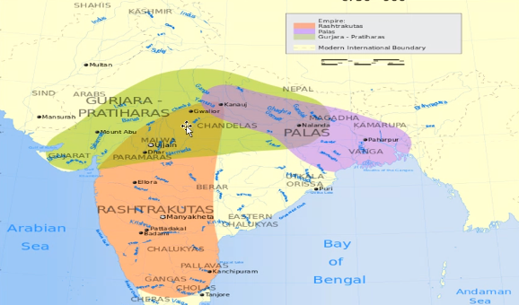

Chapter 2: New Rules and Rulers
Aratrik Pal
April 29, 2021
New Dynasties
- 3 major kingdoms:
- Palas
- Gujara Pratiharas
- Rashtrakutas
Extent of the kingdoms
Palas
- Powerful in Eastern India
- Founded by Gopala
- Dharmapala (son of Gopala)
- Devpala (son of Dharmpala)
Gurjara Pratiharas
- Powerful in western India
- Founded by Harichandra
- Famous king: Samrat Mihir Bhoj
- Famous king: Mahendrapal (son of Bhoj)
- Did not allow Arabs in India
Rashtrakutas
- Powerful in Deccan
- Founded by Dantidurga
- Famous king: Govinda III
- Famous king: Amoghavarsha
- Famous king: Krishna II
Tripartite Struggle
- Struggle in 3 parties
- 3 Parties: Palas, Gujara Pratiharas, Rashtrakutas
- Kanauj (UP) had supreme authority with fertile land & rich natural resources
Famous ruler of Chahamana Dynasty
- Prithviraj III aka Prithviraj Chauhan or Bai Pithora was a king from Chahamana dynasty
- Ruled Raj, Har, Delhi, Punk, MP, UP
- Stood against Mughals
- Mastered 6 langs
- Well versed in many subjs.
- Ascended the throne at age 11 yrs
- Father: Soeshvara died 1177CE
Turkish Invasion
- 11th Cenury CE Mahmud of Ghazni invaded North India
- Made 17 raids between 1000 & 1027 CE
- Wanted to only collect resources
- Targeted Nagarkot, Thanesar, Mathura, Kanauj, Somnath
Muhammad Ghuri
- Ruler of Ghuri in Central Asia
- Wanted to rule
- Conquered Multan, Uchch in Punjab
- Wanted to set up full fledged empire in North India